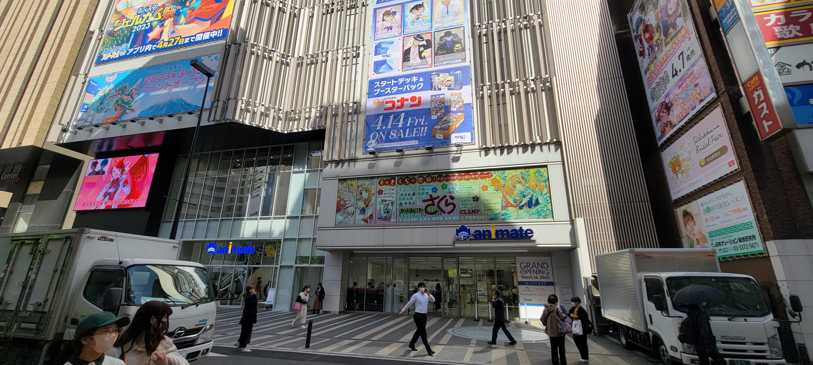
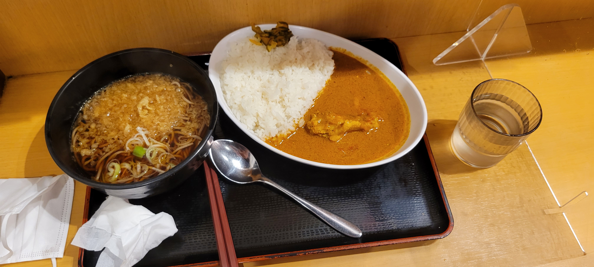
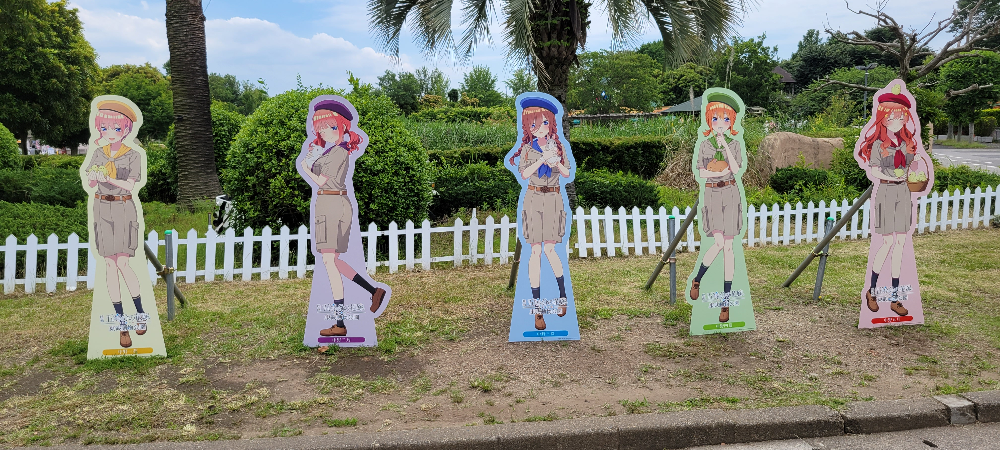
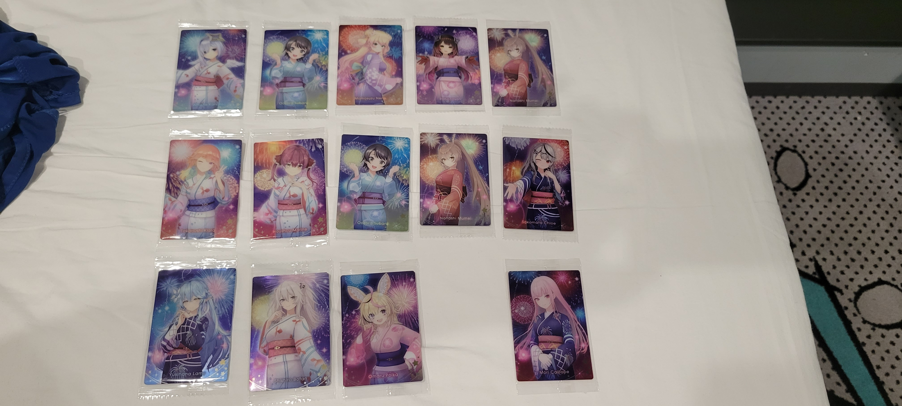
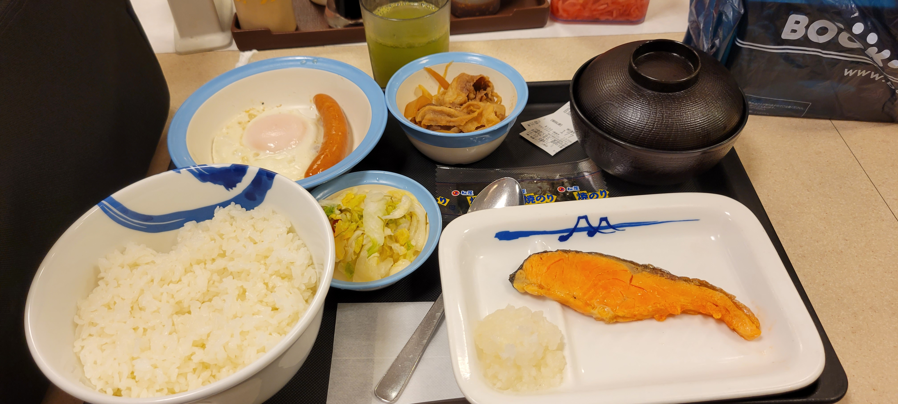
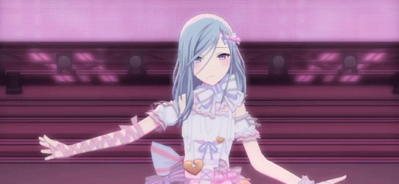

ＰｕｒｐｌｅＳｔｏｒｅ










규카츠 모토무라

매쓰야
안전하고 안심할 수 있는 식사를 여러분에게

스시로
맛있는 초밥으로 배를 채우세요. 맛있는 초밥으로 마음도 가득 채워보세요.

규카츠 모토무라
'우카츠를 일본의 식문화로 만들겠다'는 마음을 가슴에 품고 "우카츠"의 맛을 솔직하게 제공해 드립니다.
추천 게임

벽람항로
시나노：킨코우 결사단과 그림자의 권이라는 지위를 버린 아칼리는 아이오니아인들에게 필요한 강력한 무기가 되어 홀로 싸우고 있다. 스승 쉔의 가르침을 잊지 않은 채 아이오니아의 적을 하나씩 암살하기로 맹세했다. 아칼리의 살행은 은밀할지 모르나 그녀의 메시지는 대륙 전체를 뒤흔든다. "경외하라. 나는 섬기는 이 없는 암살자다."

홀로라이브
모리 칼리오페：그림 레이퍼의 제일 제자. 현재 의료 기술이 발달한 현대에는 죽음의 신으로 활약하는 장면이 없어 보이며, 대신 VTuber 활동에서 다른 사람의 영혼을 수확할 계획인 것 같습니다. 존경받고 있는 사람들의 영혼도 그녀에게로 가는 것으로 보입니다. 결국, 그녀는 말이나 목소리 이미지와는 다르게 사실은 배려심

프로젝트 세카이:컬러풀 스테이지 feat. 하츠네 미쿠
히노모리 시즈쿠：아직도 인기를 얻고 있는 아이돌 그룹 'Cheerful＊Days'의 전 센터. 예전 멤버들과 원활하게 어울리지 못하고 탈퇴한 것에 대해 어떤 마음이 있었지만, MORE MORE JUMP!의 첫 TV 출연에서의 공연을 계기로 조금은 화해하고 긍정적으로 나아가고 있습니다.